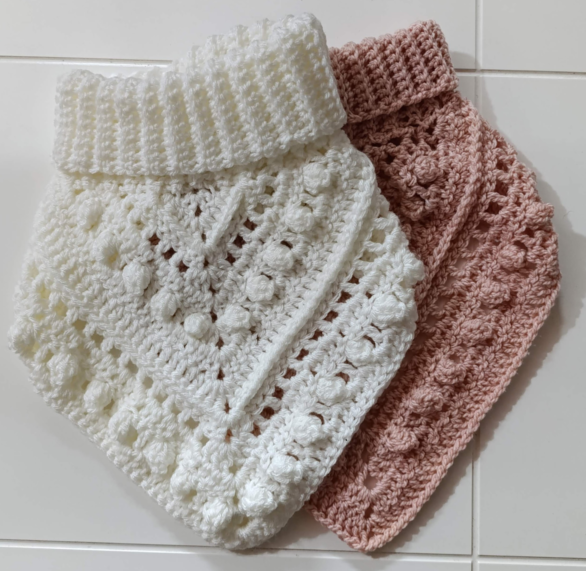
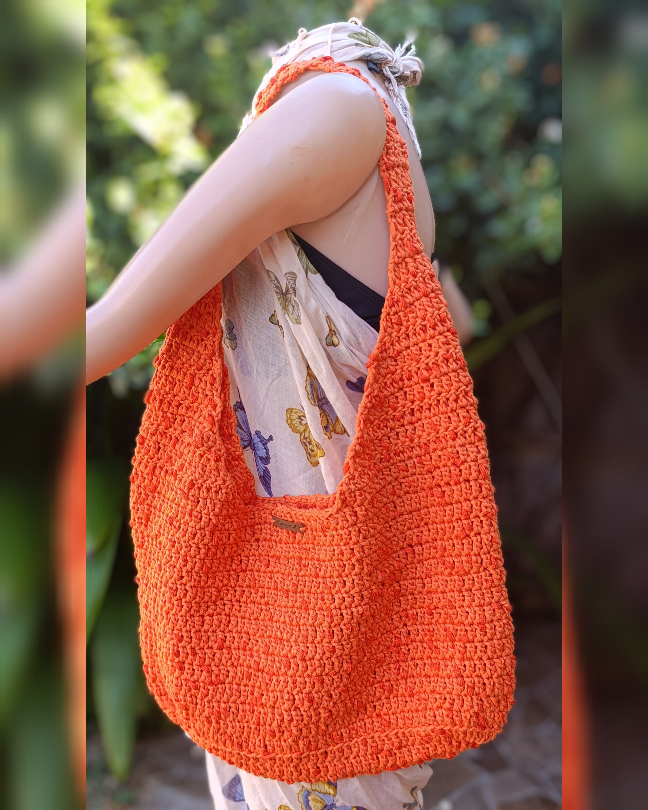
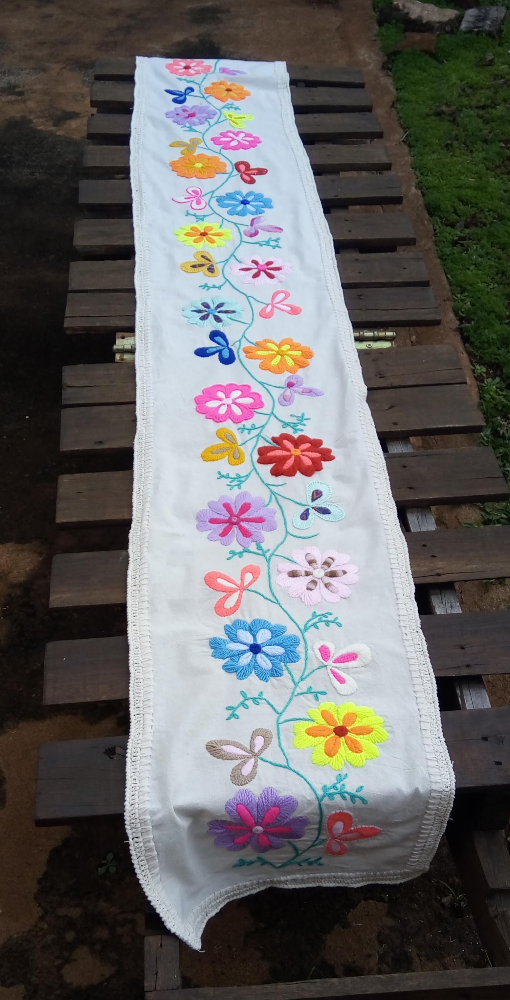
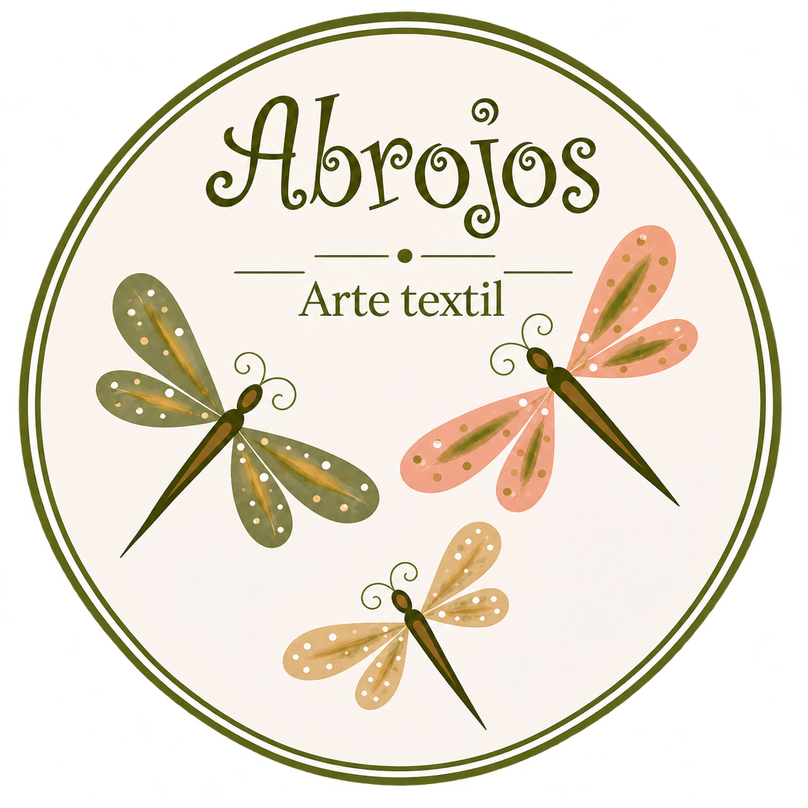

Hebras de la tierra, arte que abriga
Piezas textiles hechas a mano, creadas con dedicación para acompañar tus espacios y abrigar tus días.
Ver productosNuestros productos
Indumentaria y accesorios

Bolsos

Hogar


Piezas textiles hechas a mano, creadas con dedicación para acompañar tus espacios y abrigar tus días.
Ver productos

